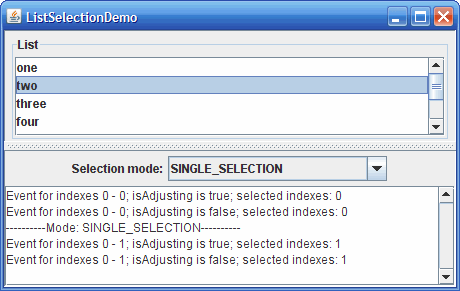
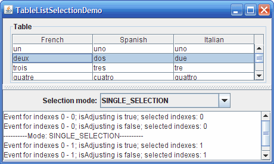

Lección: Escribiendo Listener Events
Sección: Implementando Listeners para los Eventos Comunmente Manejados
Cómo Escribir un List Selection Listener
Los eventos de selección de lista ocurren cuando la selección en una
lista o
tabla está cambiando o acaba de
cambiar. Los eventos de selección de lista se disparan desde un objeto que implementa el interfaz
ListSelectionModel. Para obtener el objeto modelo de selección de lista de una tabla,
puede usar o el método getSelectionModel o getColumnModel().getSelectionModel().
Para detectar los eventos de selección de lista, registre un listener en el objeto modelo de selección de
lista apropiado. La clase JList tambien le da la opción de registrar un listener en la propia
lista, en vez de hacerlo directamente en el modelo de selección de lista.
Esta sección muestra dos ejemplos que muestran como monitorizar los eventos de selección de lista en un modelo de selección. Ejemplos que Usan List Selection Listeners lista los ejemplos que monitorizan la lista directamente.
En estos dos ejemplos, puede cambiar dinámicamente el modo de selección a cualquiera de los tres modos soportados:
- modo de selección única
- modo de selección de intervalo único
- modo de selección de intervalo múltiple
Aquí tiene una foto del ejemplo ListSelectionDemo ejecutando en una lista:

Intente esto:
-
Pulse el botón Lanzar para ejecutar ListSelectionDemo usando
Java™ Web Start (
descargue KDJ 7 o posterior
). Alternativamente, para compilar y ejecutar el ejemplo por sí mismo, consulte el
índice de ejemplos.

- Seleccione y deseleccione elementos en la lista. Los comandos de teclado y ratón requeridos para seleccionar elementos dependen del aspecto y sensación. Para el aspecto y sensación Java, pulse el botón izquierdo del ratón para iniciar una selección, use la tecla mayúsculas para extender una selección de forma contigua, y use la tecla Control para extender una selección de forma discontigua. Note que hay dos tipos de selecciones: líder y ancla. Líder es el elemento enfocado y ancla es el elemento resaltado. Cuando presiona la tecla Control y se mueve arriba o abajo, la selección líder causa que los eventos sean disparados incluso cuando la selección actual no haya cambiado. Arrastrar el ratón mueve o extiende la selección, dependiendo del modo de selección de lista.
Aquí tiene una foto del ejemplo TableListSelectionDemo ejecutándose en una tabla:

Intente esto:
-
Pulse el botón Lanzar para ejecutar TableListSelectionDemo usando
Java™ Web Start
(
descargue KDJ 7 o posterior
). Alternativamente, para compilar y ejecutar el ejemplo por sí mismo, consulte el
índice de ejemplos.
- Seleccione y deseleccione elementos en la lista. Los comandos de teclado y ratón requeridos para seleccionar elementos dependen del aspecto y sensación. Para el aspecto y sensación Java, pulse el botón izquierdo del ratón para iniciar una selección, use la tecla mayúsculas para extender una selección de forma contigua, y use la tecla Control para extender una selección de forma discontigua. Note que hay dos tipos de selecciones: líder y ancla. Líder es el elemento enfocado y ancla es el elemento resaltado. Cuando presiona la tecla Control y se mueve arriba o abajo, la selección líder causa que los eventos sean disparados incluso cuando la selección actual no haya cambiado. Arrastrar el ratón mueve o extiende la selección, dependiendo del modo de selección de lista.
Puede encontrar el programa entero de ListSelectionDemo en
ListSelectionDemo.java y el programa entero de TableListSelectionDemo en
TableListSelectionDemo.java.
Aquí está el código de ListSelectionDemo que configura el modelo de selección y agrega un listener
a él:
...//where the member variables are defined
JList list;
...//in the init method:
listSelectionModel = list.getSelectionModel();
listSelectionModel.addListSelectionListener(
new SharedListSelectionHandler());
...
Y aquí está el código apra el listener, el cual trabaja para todos los modos de selección posibles:
class SharedListSelectionHandler implements ListSelectionListener {
public void valueChanged(ListSelectionEvent e) {
ListSelectionModel lsm = (ListSelectionModel)e.getSource();
int firstIndex = e.getFirstIndex();
int lastIndex = e.getLastIndex();
boolean isAdjusting = e.getValueIsAdjusting();
output.append("Event for indexes "
+ firstIndex + " - " + lastIndex
+ "; isAdjusting is " + isAdjusting
+ "; selected indexes:");
if (lsm.isSelectionEmpty()) {
output.append(" <none>");
} else {
// Find out which indexes are selected.
int minIndex = lsm.getMinSelectionIndex();
int maxIndex = lsm.getMaxSelectionIndex();
for (int i = minIndex; i <= maxIndex; i++) {
if (lsm.isSelectedIndex(i)) {
output.append(" " + i);
}
}
}
output.append(newline);
}
}
Este método valueChanged visualiza el primer y último indice informados por el evento, el valor
de la bandera del evento isAdjusting, y los índices actualmente seleccionados.
Dese cuenta de que el primer y último índice informados por el evento indica el rango inclusivo de elementos
para los cuales la selección ha cambiado. Si el modo de selección es de intervalo múltiple la selección de
algunos elementos dentro del rango podría no haber cambiado. La bandera isAdjusting es
true si el usuario está aún manipulando la selección, y false si el usuario ha
terminado de cambiar la selección.
El objeto ListSelectionEvent pasado dentro de valueChanged indica sólo que la
selección ha cambiado. El evento no contiene información sobre la selección actual. Entonces, este método
consulta el modelo de selección para averiguar la selección actual.
La IPA de List Selection Listener
La Interfaz ListSelectionListener
Ya que ListSelectionListener sólo tiene un método, no tiene clase adaptadora correspondiente.
| Método | Propósito |
|---|---|
| valueChanged(ListSelectionEvent) | Llamado en respuesta a cambios en la selección. |
| Método | Propósito |
|---|---|
|
Object getSource()
(en java.util.EventObject)
|
Devuelve el objeto que disparó el evento. Si registra un list selection listener en una lista directamente, entonces la fuente de cada evento es la lista. De otra forma, la fuente es el modelo de selección. |
| int getFirstIndex() | Devuelve el índice del primer elemento cuya valor de selección ha cambiado. Tenga en cuenta que para la selección de intervalo múltiple, se garantiza que el primer y el último elemento han cambiado, pero es posible que los elementos entre ellos no lo hayan hecho. Sin embargo, cuando presiona la tecla Control y se mueve arriba o abajo, la selección líder causa que los eventos se disparen aunque la selección real no haya cambiado. |
| int getLastIndex() | Devuelve el índice del último elemento cuyo valor de selección ha cambiado. Tenga en cuenta que para la selección de intervalo múltiple, se garantiza que el primer y último elemento han cambiado, pero es posible que los elementos entre ellos no lo hayan hecho. Sin embargo, cuando presiona la tecla Control y se mueve arriba o abajo, la selección líder causa que los eventos se disparen aunque la selección real no haya cambiado. |
| boolean getValueIsAdjusting() |
Devuelve true si la selección está aún cambiando. Muchos list selection listeners sólo
están interesados en el estado final de la selección y pueden ignorar los eventos de selección de lista
cuando este método devuelve true.
|
Ejemplos que Usan List Selection Listeners
La tabla siguiente lista los ejemplos que usan list selection listeners.
| Ejemplo | Dónde Está Descrito | Notas |
|---|---|---|
ListSelectionDemo
|
Esta Sección | Informa de todos los eventos de selección de lista que ocurren en una lista. Permite al usuario cambiar dinámicamente el modo de selección. |
TableListSelectionDemo
|
Esta Sección | Informa de todos los eventos de selección de lista que ocurren en una tabla. Permite al usuario cambiar dinámicamente el modo de selección. |
ListDemo |
Cómo Usar Listas | Monitoriza los eventos en una lista de selección única (no en su modelo de selección). Habilita y deshabilita un botón dependiendo de si alguno de los elementos de la lista son seleccionados. |
SplitPaneDemo
|
Cómo Usar Listas | Monitoriza los eventos en una lista de selección única (no en su modelo de selección). |
SimpleTableSelectionDemo
|
Cómo Usar Tablas | Usa dos list selection listeners diferentes en una tabla. Un listener monitoriza los eventos de selección de lista en las columnas de la tabla, el otro monitoriza los eventos de selección de lista en las filas de la tabla. |